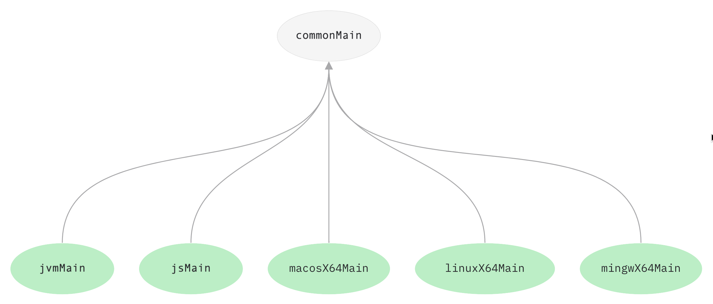
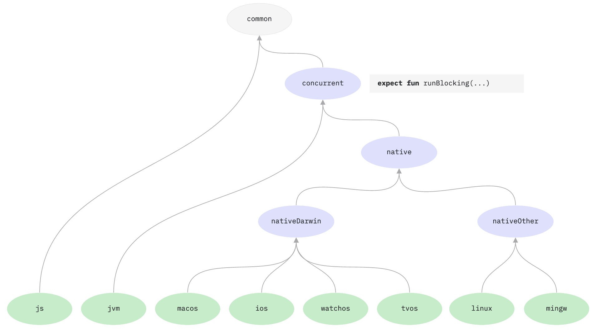

type: doc layout: reference
title: "平台间共享代码"
平台间共享代码
With Kotlin Multiplatform, you can share the code using the mechanisms Kotlin provides:
- Share code among all platforms used in your project. Use it for sharing the common business logic that applies to all platforms.
- Share code among some platforms included in your project but not all. You can reuse much of the code in similar platforms using a hierarchical structure. You can use target shortcuts for common combinations of targets or create the hierarchical structure manually.
If you need to access platform-specific APIs from the shared code, use the Kotlin mechanism of expected and actual declarations.
对所有平台共享代码
If you have business logic that is common for all platforms, you don’t need to write the same code for each platform – just share it in the common source set.

All platform-specific source sets depend on the common source set by default. You don’t need to specify any dependsOn
relations manually for default source sets, such as jvmMain, macosX64Main, and others.
If you need to access platform-specific APIs from the shared code, use the Kotlin mechanism of expected and actual declarations.
对相似平台共享代码
You often need to create several native targets that could potentially reuse a lot of the common logic and third-party APIs.
For example, in a typical multiplatform project targeting iOS, there are two iOS-related targets: one is for iOS ARM64 devices, the other is for the x64 simulator. They have separate platform-specific source sets, but in practice there is rarely a need for different code for the device and simulator, and their dependencies are much the same. So iOS-specific code could be shared between them.
Evidently, in this setup it would be desirable to have a shared source set for two iOS targets, with Kotlin/Native code that could still directly call any of the APIs that are common to both the iOS device and the simulator.
In this case, you can share code across native targets in your project using the hierarchical structure.
To enable the hierarchy structure support, add the following flag to your gradle.properties.
kotlin.mpp.enableGranularSourceSetsMetadata=true
There are two ways you can create the hierarchical structure:
- Use target shortcuts to easily create the hierarchy structure for common combinations of native targets.
- Configure the hierarchical structure manually.
Learn more about sharing code in libraries and using Native libraries in the hierarchical structure.
使用目标快捷方式
In a typical multiplatform project with two iOS-related targets – iosArm64 and iosX64, the hierarchical structure
includes an intermediate source set (iosMain), which is used by the platform-specific source sets.

The kotlin-multiplatform plugin provides target shortcuts for creating structures for common combinations of targets.
| Target shortcut | Targets |
|---|---|
ios |
iosArm64, iosX64 |
watchos |
watchosArm32, watchosArm64, watchosX64 |
tvos |
tvosArm64, tvosX64 |
All shortcuts create similar hierarchical structures in the code. For example, the ios shortcut creates the following hierarchical structure:
Groovy DSL
kotlin {
sourceSets{
iosMain {
dependsOn(commonMain)
iosX64Main.dependsOn(it)
iosArm64Main.dependsOn(it)
}
}
}
Kotlin DSL
kotlin {
sourceSets{
val commonMain by sourceSets.getting
val iosX64Main by sourceSets.getting
val iosArm64Main by sourceSets.getting
val iosMain by sourceSets.creating {
dependsOn(commonMain)
iosX64Main.dependsOn(this)
iosArm64Main.dependsOn(this)
}
}
}
手动配置层次结构
To create the hierarchical structure manually, introduce an intermediate source set that holds the shared code for several targets and create a structure of the source sets including the intermediate one.

For example, if you want to share code among native Linux, Windows, and macOS targets – linuxX64M, mingwX64, and
macosX64:
- Add the intermediate source set
desktopMainthat holds the shared logic for these targets. - Specify the hierarchy of source sets using the
dependsOnrelation.
Groovy DSL
kotlin {
sourceSets {
desktopMain {
dependsOn(commonMain)
}
linuxX64Main {
dependsOn(desktopMain)
}
mingwX64Main {
dependsOn(desktopMain)
}
macosX64Main {
dependsOn(desktopMain)
}
}
}
Kotlin DSL
kotlin{
sourceSets {
val desktopMain by creating {
dependsOn(commonMain)
}
val linuxX64Main by getting {
dependsOn(desktopMain)
}
val mingwX64Main by getting {
dependsOn(desktopMain)
}
val macosX64Main by getting {
dependsOn(desktopMain)
}
}
}
You can have a shared source set for the following combinations of targets:
- JVM + JS + Native
- JVM + Native
- JS + Native
- JVM + JS
- Native
We don’t currently support sharing a source set for these combinations:
- Several JVM targets
- JVM + Android targets
- Several JS targets
If you need to access platform-specific APIs from a shared native source set, IntelliJ IDEA will help you detect common declarations that you can use in the shared native code. For other cases, use the Kotlin mechanism of expected and actual declarations.
在库中共享代码
Thanks to the hierarchical project structure, libraries can also provide common APIs for a subset of targets. When a library is published, the API of its intermediate source sets is embedded into the library artifacts along with information about the project structure. When you use this library, the intermediate source sets of your project access only those APIs of the library which are available to the targets of each source set.
For example, check out the following source set hierarchy from the kotlinx.coroutines repository:

The concurrent source set declares the function runBlocking and is compiled for the JVM and the native targets.
Once the kotlinx.coroutines library is updated and published with the hierarchical project structure, you can depend on
it and call runBlocking from a source set that is shared between the JVM and native targets since it matches the
“targets signature” of the library’s concurrent source set.
在层次结构中使用原生库
You can use platform-dependent libraries like Foundation, UIKit, and POSIX in source sets shared among several native targets. This helps you share more native code without being limited by platform-specific dependencies.
No additional steps are required – everything is done automatically. IntelliJ IDEA will help you detect common declarations that you can use in the shared code.
However, note that there are some limitations:
- This approach works only for a native source set that is shared among platform-specific source sets. It doesn’t work
for native source sets shared at higher levels of the source set hierarchy.
For example, if you havenativeDarwinMainthat is a parent ofwatchosMainandiosMain, whereiosMainhas two children –iosArm64MainandiosX64Main, you can use platform-dependent libraries only foriosMainbut not fornativeDarwinMain. - It works only for interop libraries shipped with Kotlin/Native.
To enable usage of platform-dependent libraries in shared source sets, add the following to your gradle.properties:
kotlin.mpp.enableGranularSourceSetsMetadata=true
kotlin.native.enableDependencyPropagation=false
Learn more about the technical details.